GenoBit · Proyecto
Relanzamiento · base de datos OASIS
Antes de empezar
El grupo
Geno de genómica y Bit de computación: el primer grupo estudiantil dedicado a bioinformática en el Tec.
Construida desde la bioinformática: la hélice con pines une biología molecular y computación.
El primer grupo estudiantil de bioinformática del Tec.
Talleres y proyectos con una ruta clara para los siguientes ciclos.
Área de investigación
La rama donde cualquier miembro puede hacer investigación en bioinformática: proyectos liderados por estudiantes y acompañados por profesores.
Limpiar y estandarizar resonancias de cerebro para detectar demencia.
Señales de Alzheimer en sangre y líquido cefalorraquídeo (modelo A-T-N).
App educativa que explica el plegamiento de proteínas con la API de AlphaFold2.
De lecturas crudas de secuenciación al análisis de microRNAs.
Lo relanzamos este semestre, con ustedes.
Neuroimaging · motivación
El deterioro cognitivo afecta memoria, atención, lenguaje y motricidad. Está ligado al Alzheimer, al Parkinson y a otras demencias.
Leer una resonancia (MRI) es tardado, subjetivo y depende de la experiencia del especialista, sobre todo cuando los cambios son sutiles.
La base de datos
Open Access Series of Imaging Studies · Washington University in St. Louis. Resonancias T1 de acceso abierto.
Release original (3D)
Versión de Kaggle (2D, la que usamos)
Cada escaneo es un volumen 3D de 256 × 256 × 128 vóxeles. Estas animaciones recorren un cerebro real de OASIS (OAS1_0001) en los tres planos.
¿De dónde salen los JPG?
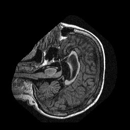
61 de 256
cortes por escaneo (100–160). Falta el resto de la cabeza.
Los JPG salen del escaneo crudo: con cráneo, sin corregir brillo y estirados 2:1. La etiqueta solo vive en el nombre de la carpeta.
Etiquetas
contando imágenes
cada punto = 1 persona · grandes: demencia moderada
Lo que ve la red
Tabla clínica de OASIS
131 de 266 personas “Non Demented” nunca fueron evaluadas clínicamente: son adultos jóvenes (sin CDR).
La edad casi separa las clases por sí sola. Una red puede aprender “joven vs. mayor” en lugar de “sano vs. demencia”.
Redundancia
Lo que se propuso el semestre pasado
Quita cráneo, piel y ojos: solo queda el cerebro.
Corrige brillos artificiales del escáner.
Segmenta y parcela el cerebro en regiones.
Cuánta información trae cada corte.
Ordena los cortes por utilidad y se queda con los mejores.
Se listaron, pero no se implementaron ni se midió su efecto. A continuación: cómo funciona cada una, con datos reales de OASIS.
Técnica 1 · limpieza
observada = real × campo + ruido
El escáner agrega un “campo” suave de brillo: el mismo tejido se ve más claro de un lado. N4 estima ese campo con curvas suaves (B-splines), afinando el histograma en cada iteración, y luego lo divide.
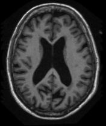
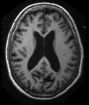
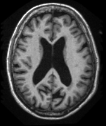
imagen limpia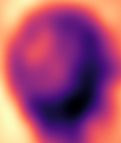
campo estimado por N4Técnica 2 · limpieza
Cinco pasos clásicos para quedarnos solo con el cerebro.
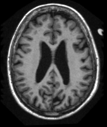
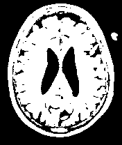
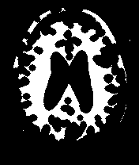
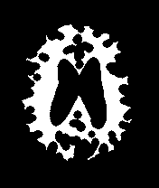
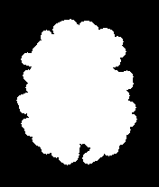
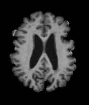
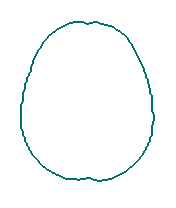
Técnica 3 · limpieza
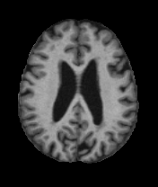
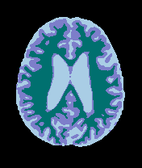
Técnica 4 · selección de cortes
Técnica 5 · selección de cortes
Los 61 cortes de un escaneo real de Kaggle, en orden anatómico.
Una pregunta incómoda
Profesor(a) asesor(a)
Recompensa: un equipo con ganas
Siendo honestos
Hacia dónde vamos
Este repo y el notebook de OASIS como punto de partida común.
CNN con split por persona y métricas balanceadas (F1 macro, AUC).
N4, skull stripping y registro sobre los volúmenes originales de OASIS.
Ablación: medir cuánto mueve cada técnica cada métrica.
Sumar profesor(a), escribir resultados y valorar ADNI.
Notebook, datos y esta presentación:
github.com/Mmateo101/presentation-neuroimaging